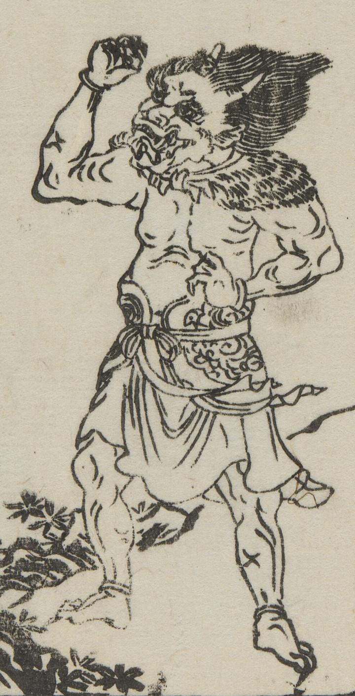

頭に2本の角、口に牙が生えた鬼。上半身は裸で、腰布を巻いている。本文には「鬼は人死して肉骨は土に皈し、血は水に皈し、魂気は天に皈す、その陰気せまり存して依ところなしかるがゆえに鬼となる」とあり。
著作者：中村惕齋・下河辺拾水／出典：親書誌：U426_nichibunken_0455：頭書増補訓蒙図彙大成；カシラガキゾウホキンモウズイタイセイ／日付：2025／資源識別子：U426_nichibunken_0455_0002_0000
Copyright (c)2010- International Research Center for Japanese Studies, Kyoto, Japan. All rights reserved.